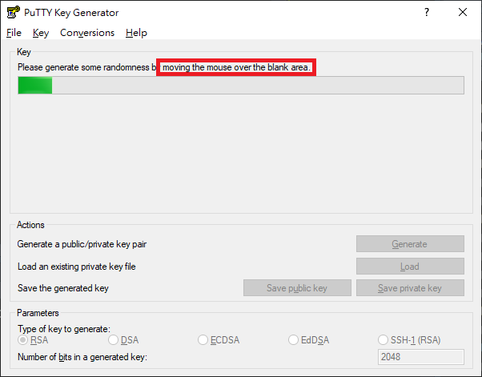
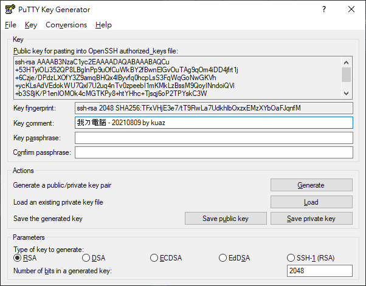

PuTTY
使用 PuTTY 連線至 OpenSSH 伺服器
以 PuTTY 產生 key
另一個方法不會需要你手動安裝 OpenSSH Client，不過、一樣地，要安裝PuTTY 程式。
Step 1 — 安裝 PuTTY
到開發者的網站，然後下載適合你 Windows 的版本 (副檔名為 *.msi 的安裝程式)
根據你的需求設定安裝程式

待安裝程式安裝完成

安裝完成後，點選「開始」，找到 PuTTYgen開啟，或是點選「開始」，鍵入 puttygen 後按 Enter↩︎
Step 2 — 經由 PuTTYgen 產生 ssh key pairs
跟 OpenSSH Client 一樣地，你可以在下方的 Types 選擇你偏好的加密方式。點選「Generate」開始產生 key，此時不要傻傻地在那邊等，要在程式進度條下方空白處隨意移動你的滑鼠鼠標。

完成後，可以在 Comment 的輸入框註解一下這個 key 是從哪裡來的，以後擁有多個 key pairs 時才不會搞混。當然你也可以用密碼保護這個 key pairs，如果有需要在 Key passphrase 與 Confirm passphrase 輸入一模一樣的密碼。

Step 3 — 妥善保存好產生的 Key
分別按下「Save public key」與「Save private key」找到適合的地方儲存它。
上傳以 PuTTY 產生的 ssh key pairs
PuTTY 產生的 public key 與 private key 格式比較特別，並不能直接把 public key 裡面的文字直接貼到遠端電腦的 ~/.ssh/authorized_keys 檔案裡面，需要經由 PuTTYgen.exe 讀取 *.ppk 才能得到正確格式的 public key。首先把 PuTTYgen 程式打開。

接著按「Load」把剛剛產生的 *.ppk 檔案讀取進來。會看到一行字「Public key for pasting into OpenSSH authorized_keys file」下面的可複製區域就是 public key，把它整段複製起來。

接著打開「PowerShell」或是「命令提示字元」，輸入:
echo "<YOUR_PUBLIC_KEY>" | ssh asis@192.168.0.13 "cat >> ~/.ssh/authorized_keys"將
<YOUR_PUBLIC_KEY>替換成自己的 public key這裡的
asis為第一章的使用者設定的預設使用者192.168.0.13為我虛擬主機的 ip 位址，查詢 ip 位址可以先手動登入虛擬主機後，用hostname -I或是ip addr show指令查詢
接著按 Enter↩︎，跳出輸入密碼提示，這裡輸入預設的使用者密碼 asis
asis@192.168.0.13's password:輸入完成不會出現任何訊息是正常的，代表操作沒有問題且已經可以使用 PuTTY 連線了。
PuTTYgen 產生的 key pairs 的連線方式:
SSH 連線方式大同小異:
首先點選「開始」，鍵入
PuTTY打開客戶端在左邊的 「Category:」 下，選取 「Session」
於 Host Name 輸入「使用者@目的地 IP」，像是「
asis@192.168.0.13」你可以點選下面的「Default Settings」後，接著按「Save」會把剛剛輸入的 IP 與 Port 儲存至「Default Settings」內，當然你也可以自己取一個新的名字。
接著展開左邊 「Category:」 下的「Connection」 ➜ 點選「SSH」 ➜ 再點選「Auth」，於最下面的「Private key file for authentication:」點選「Browse…」選取
*.ppk檔案位置完成後點選「Open」連線
與使用 ssh 指令連線相同，都會先提醒你目的地是否正確。確認無誤按下「Accept」

連接成功!